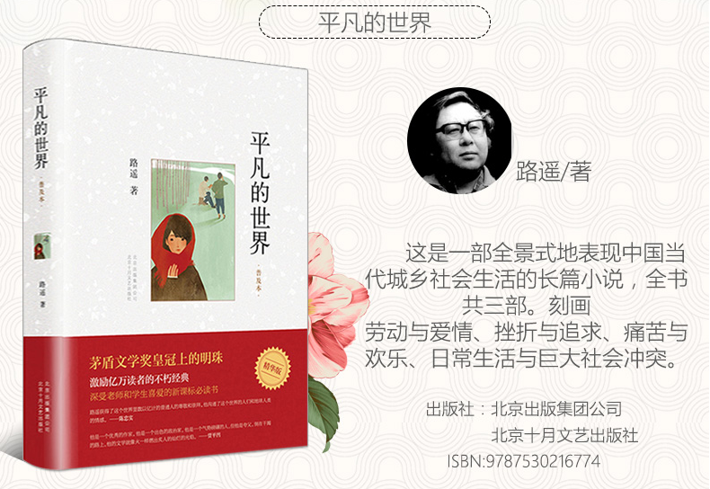
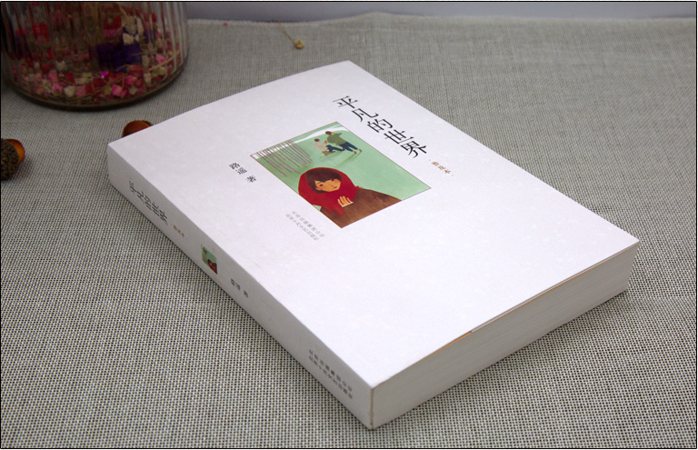
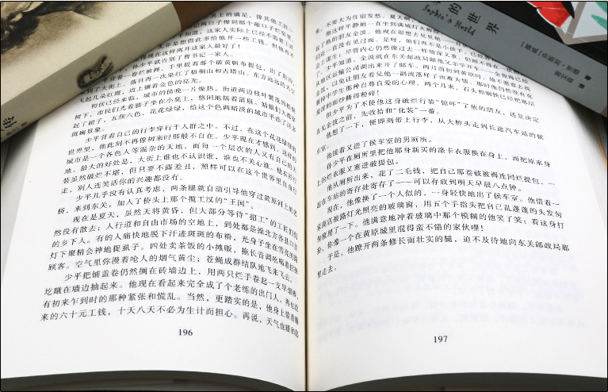

首页



Previous
Next
商品名称: 《平凡的世界》
价 格:￥39.80
商品类型：书籍
运费:包邮
库存：有货
1.此商品不支持7天无理由退货
2.此商品由 海囤全球 发货并提供售后服务
3.此商品不提供国内购物发票
4.此商品支持白条30天免息或分期支付，不可使用京豆、京东卡、京东E卡、余额支付，不支持货到付款
5.根据中国海关总署要求，您所购买的商品清关入境需要提供身份证信息进行入境申报，请您配合。我们不会向第三方泄露您的资料，请您放心
立即购买
加入购物车
详 情
内容简介: 这是一部现实主义小说，也是小说化的家族史。作家高度浓缩了中国西北农村的历史变迁过程，作品达到了思想性与艺术性的高度统一，特别是主人公面对困境艰苦奋斗的精神，对今天的大学生朋友仍有启迪。 这是一部全景式地表现中国当代城乡社会生活的长篇小说，本书共三部。作者在近十年问广阔背景上，通过复杂的矛盾纠葛，刻划了社会各阶层众多普通人的形象。劳动与爱情，挫折与追求，痛苦与欢乐，日常生活与巨 大社会冲突，纷繁地交织在一起，深刻地展示了普通人在大时代历史进程中所走过的艰难曲折的道路。这是《平凡的世界》（共三部）的精华版，在原书三本的基础上缩写为一本，内容更为集中。 作者简介: 路遥（1949—1992），原名王卫国，1949年12月3日生于陕西榆林市清涧县一个贫困的农民家庭，因家贫7岁即过继给延川县农村的伯父。曾在延川县立中学学习，1969年回乡务农。其间做过许多临时性的工作， 并在农村一小学教书一年。1973年进入延安大学中文系学习，开始文学创作。大学毕业后，任《陕西文艺》（今为《延河》）编辑。1980年发表《惊心动魄的一幕》，获得第一届全国优秀中篇小说奖。1982年发表中篇小 说《人生》，后被改编为电影，轰动全国。1988年完成百万字的长篇巨著《平凡的世界》，这部小说以恢宏的气势和史诗般的品格，全景式地表现了改革时代中国城乡的社会生活和人们思想情感的巨大变迁，还未完成即 在中央人民电台广播，并于1991年荣获第三届茅盾文学奖。1992年11月17日上午8时20分，路遥因病医治无效在西安逝世，年仅42岁。
评 价
暂无评价